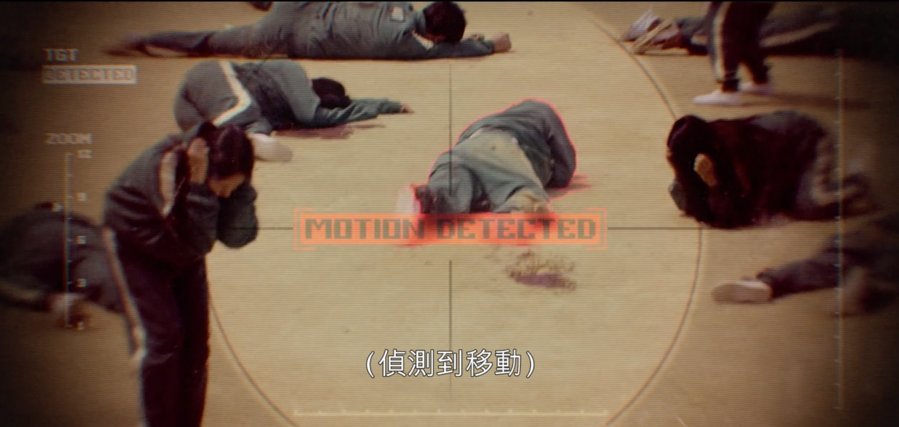

新坑待填中…
引子
鱿鱼游戏是最近在Netflix上热播的一部惊悚类型韩剧，它的火热程度到底达到什么程度？在全球90多个国家，它在Netflix的收视率达到第一。它风靡欧洲各国，许多西方人因这部剧开始学习韩语。这部剧为什么这么引人注目呢？其大致设定如此（包含微量剧透，放心施用）
一个疯狂的组织召集了一群生活绝望的人，邀请他们参加几个游戏，只要全部通过便可以获得四百多亿韩元奖金。但殊不知这些游戏是以生命为赌注，输了游戏收到的是一个个枪子。由此，其剧情设定的惊悚程度可见一斑。
事情是这样的，笔者在看完第一集，也就是第一个游戏觉得很有意思。其游戏是一二三木头人，小女孩数完“一二三木头人”，所有人不许动，如果动的话收到的就是一枪。

注意到这里，此剧给了一个检测镜头特写
小女孩的眼睛（摄像头) 检测是否有人系统，检测到移动者的位置后，对这个位置进行射击。
笔者最担心的计算机视觉算法的应用出现了！看到这么阴间的游戏，我深思良久，决定用视觉算法亲自实现一个123木头人游戏！
方法设计
这里面最关键的问题是精确地识别运动的目标，先看看有哪些方法：
笔者先决定用背景差法提取直接提取运动目标，这样做的一个问题是：我们需要反复调节差值图的轮廓面积（Contour Area），调就调吧，于是我用OpenCV写了一个参数标定程序
还是有许多小框框